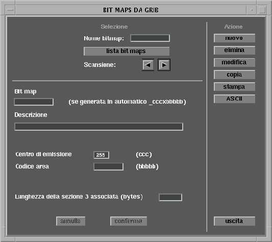
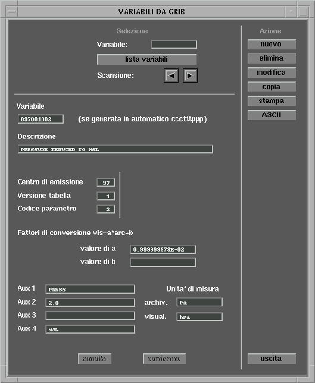
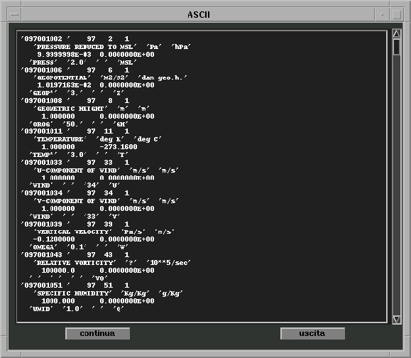

Sistema
Archiviazione GRIB 
Sistema
Archiviazione GRIB 
5.1.4 Gestione bit maps
Compare la seguente maschera:

La funzione di stampa produce il seguente tipo di output:
La funzione di carico/scarico ASCII legge o scrive un file ASCII in cui ogni bit map è descritta da due records (ogni campo caratteri è compreso tra apici singoli e i campi sono distanziati uno dall'altro da uno spazio) più la bit map:
- Primo record: nome bit map.
- Secondo record: descrizione bit map, centro emissione, codice bit map, lunghezza bit map.
esempio di file ASCII:
5.1.5 Gestione variabili
Compare la seguente maschera:

La funzione di stampa produce il seguente tipo di output:
La funzione di carico/scarico ASCII legge o scrive un file ASCII in cui ogni variabile è descritta da quattro records (ogni campo caratteri è compreso tra apici singoli e i campi sono distanziati uno dall'altro da uno spazio):
- Primo record: nome variabile, centro emissione, codice parametro, versione tabella, ECMWF.
- Secondo record: descrizione variabile, unità di misura archivio, unità di misura visualizzazione.
- Terzo record: fattore di conversione A, fattore di conversione B.
- Quarto record: ausiliario 1, aus. 2, aus. 3, aus. 4.
esempio di file ASCII:

PICO
data s.r.l. Pagina
-